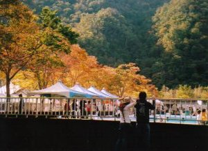
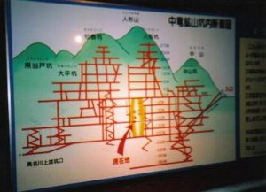

紅葉狩り | 2006年10月 |
|---|---|
| 岐阜の九頭竜湖周辺の紅葉祭り http://www.walkerplus.com/koyo/hokuriku/detail/ky4029.html アトラクションとして、 アドベンチャーランド中竜（ケイビング） http://www1.vipa.ne.jp/~nakatatu/framepage6.html 紅葉祭りの場所は九頭竜スキー場の脇。紅葉はいまいち。 でも催しや出店がたくさん出ており、にぎやかでした。 | |
 紅葉祭り |  御琴や太鼓の催しもの |
| 中でも化石探しという体験があり、岩をトンカチでガンガン叩いていたのは驚きました。 出店は野菜などの青空市場や、京都 鯖江などから焼き鯖すしなどがあったと記憶してます。 催しは御琴や太鼓など。催し用席もあったのですが、地べたに敷物していた人もいました。 釣堀もありにぎわってました。 | |
|  釣堀 |  廃坑道 |
| ケイビング（？）は廃坑道を見学するツアー（？）。 マイクロバスで廃坑の奥まで進む。ミステリーツアーみたい。 入り口が生々しいっちゅうねん（汗）。中は真っ暗で寒い。 鉱石をとる前の壁の説明があったが分からんかった。けど、鉱脈の勉強になったと思う。 | |
 廃坑道を見学するツアー |  中は真っ暗 |
| 写真＆コメント ｂｙ シュガー | |